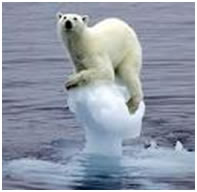
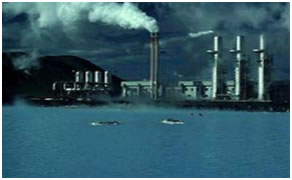

Lecture 01 :: Scope and Importance of Environmental Studies

Environment is derived from the French word Environner, which mean encircle or surrounding. Environment is a complex of many variables, which surrounds man as well as the living organisms. Environmental studies describe the interrelationships among organisms, the environment and all the factors, which influence life on earth, including atmospheric conditions, food chains, the water cycle, etc. It is a basic science about our earth and its daily activities, and therefore, this science is important for one and all.
Scope of environmental studies
Environmental studies discipline has multiple and multilevel scopes. This study is important and necessary not only for children but also for everyone. The scopes are summarized as follows:
- The study creates awareness among the people to know about various renewable and nonrenewable resources of the region. The endowment or potential, patterns of utilization and the balance of various resources available for future use in the state of a country are analysed in the study.
- It provides the knowledge about ecological systems and cause and effect relationships.
- It provides necessary information about biodiversity richness and the potential dangers to the species of plants, animals and microorganisms in the environment.
- The study enables one to understand the causes and consequences due to natural and main induced disasters (flood, earthquake, landslide, cyclones etc.,) and pollutions and measures to minimize the effects.
- It enables one to evaluate alternative responses to environmental issues before deciding an alternative course of action.
- The study enables environmentally literate citizens (by knowing the environmental acts, rights, rules, legislations, etc.) to make appropriate judgments and decisions for the protection and improvement of the earth.
- The study exposes the problems of over population, health, hygiene, etc. and the role of arts, science and technology in eliminating/ minimizing the evils from the society.
- The study tries to identify and develop appropriate and indigenous eco-friendly skills and technologies to various environmental issues.
- It teaches the citizens the need for sustainable utilization of resources as these resources are inherited from our ancestors to the younger generating without deteriorating their quality.
- The study enables theoretical knowledge into practice and the multiple uses of environment.
Importance of environmental study
Environmental study is based upon a comprehensive view of various environmental systems. It aims to make the citizens competent to do scientific work and to find out practical solutions to current environmental problems. The citizens acquire the ability to analyze the environmental parameters like the aquatic, terrestrial and atmospheric systems and their interactions with the biosphere and anthrosphere.
Importance
- World population is increasing at an alarming rate especially in developing countries.
- The natural resources endowment in the earth is limited.
- The methods and techniques of exploiting natural resources are advanced.
- The resources are over-exploited and there is no foresight of leaving the resources to the future generations.
- The unplanned exploitation of natural resources lead to pollution of all types and at all levels.
- The pollution and degraded environment seriously affect the health of all living things on earth , including man.
- The people should take a combined responsibility for the deteriorating environment and begin to take appropriate actions to space the earth.
- Education and training are needed to save the biodiversity and species extinction.
- The urban area, coupled with industries, is major sources of pollution.
- The number and area extinct under protected area should be increased so that the wild life is protected at least in these sites.
- The study enables the people to understand the complexities of the environment and need for the people to adapt appropriate activities and pursue sustainable development, which are harmonious with the environment.
- The study motivates students to get involved in community action, and to participate in various environmental and management projects.
- It is a high time to reorient educational systems and curricula towards these needs.
- Environmental studies take a multidisciplinary approach to the study of human interactions with the natural environment. It integrates different approaches of the humanities , social sciences, biological sciences and physical sciences and applies these approaches to investigate environmental concerns.
- Environmental study is a key instrument for bringing about the changes in the knowledge, values, behaviors and lifestyles required to achieve sustainability and stability within and among countries.
Environmental studies deals with every issue that affects an organism. It is essentially a multidisciplinary approach that brings about an appreciation of our natural world and human impacts on its integrity. It is an applied science as it seeks practical answers to making human civilization sustainable on the earth's finite resources. Its components include
- Biology
- Geology
- Chemistry
- Physics
- Engineering
- Sociology
- Health
- Anthropology
- Economics
- Statistics
- Philosophy
Major environmental issues
Man and nature have lived together and as long as man’s wants were in conformity with nature, there was no problem. But unfortunately, man’s ambition for limitless enjoyment and comfort has led him towards the exploitation of nature’s wealth so indiscriminately as to reduce nature’s capacity for self stabilization. The indiscriminate exploitation of nature over centuries has created numerous environmental problems. Man’s voracious appetite for resources and his desire to conquer nature has put him on collision course with environment. The demands of his explosive technological society impose intense stress on the state of equilibrium with the environment. Major environmental issues threatening mankind are Global warming, water pollution, pesticide pollution, Hazardous waste, biomedical wastes, e waste, and loss of biodiversity
India today is one of the first ten industrialized countries of the world. Today we have a good industrial infrastructure in core industries like metals, chemicals, fertilizers, petroleum, food etc. What has come out of these?, Pesticides, detergents, plastics, solvents, paints, dyes, food additives etc. Due to progress in atomic energy, there are also been an increase in radioactivity in the biosphere. Besides these there are a number of industrial effluent and emissions particularly poisonous gases in the atmosphere. Mining activities also added to this problem particularly as solid waste.
Such activities of man had adverse effect on all forms of living organisms in the biosphere. The earth planet along with the atmosphere (air, land, water) that sustains life is called the Biosphere. Due to lack of development of a culture of pollution control, there has resulted a heavy backlog of gaseous, liquid and solid pollution in our country. The solid wastes which causes pollution are Hazardous waste, pesticides, medical waste etc. they are become the major environmental issues in addition to automobile pollution, climate change, water pollution, pesticide pollution and biodiversity loss in our country and worldwide.
Industrial / Vehicular pollution
The coolest culprits of environmental degradation in metropolitan cities are vehicular and industrial pollution. Since 1975 the Indian economy has grown 2.5 times, the industrial pollution load has grown 3.47 times and the vehicular pollution load 7.5 times, in Delhi, for example 70% of air pollution is caused by vehicular pollution. Thanks to the 3 million vehicles on its roads-while industries account for 17%. The pollutants emitted by the vehicles could produce inflammatory effects on the respiratory organs, could be toxic or even carcinogenic depending upon the fuel type, In India, vehicles primarily run on diesel or petrol.
Air pollutants from automobiles |
|
|
|
Climate Change
The rising concentrations of greenhouse gases (GHGs) of anthropogenic origin in the atmosphere such as carbon dioxide (CO2), methane (CH4) and nitrous oxide (N2O) have increased, since the late 19th century. According to the Third Assessment Report (TAR) of the Intergovernmental Panel on Climate Change, because of the increase in concentration of greenhouse gases in the atmosphere (for e.g., CO2 by 29 per cent, CH4 by 150 per cent and N2O by 15 per cent) in the last 100 years, the mean surface temperature has risen by 0.4–0.8°C globally. The precipitation has become spatially variable and the intensity and frequency of extreme events has increased. The sea level also has risen at an average annual rate of 1–2 mm during this period. The continued increase in concentration of GHG in the atmosphere is likely to lead to climate change resulting in large changes in ecosystems, leading to possible catastrophic disruptions of livelihoods, economic activity, living conditions, and human health. The United Nations Framework Convention on Climate Change requires the parties to protect the climate system in accordance with their ‘common but differentiated responsibilities’ and respective capabilities. In the year 1990, the developed world (Australia, Canada, USA, Europe, former USSR and Japan) emitted around 66 per cent of the total global GHG emissions, which though has reduced to 54 per cent in 2000, mainly offset by the rise in Chinese emissions. The South Asian region, including three-fourths emission share of India, contributed only 3 per cent of the total global GHG emissions in 1990 and the share of emissions from South Asia has grown merely by 4 per cent in 2000.

Water pollution
India has 12 major rivers with a total catchments area of 252.8 million hectare. The Indian homes produce about 75 % of the wastewater, and sewage treatment facilities are inadequate in most cities and almost absent in rural India. According to the Central pollution Control Board, of the 8,432 large and medium industries in the country, only 4,989 had installed appropriate measures to treat wastewater before discharge. Of the over two million small scale industrial units, a number of which like tanneries are extremely polluting, very few have any treatment facilities whatsoever and their untreated wastes invariably find their way into country’s water systems.
Polluted tank |
Marine pollution |
Industrial pollution |
Poisoned by Pesticides
Poisoning from pesticides affects 68,000 farmers and workers every day; annually, an estimated 25 million workers suffer from pesticide poisoning throughout the world. Farmers and agricultural workers are exposed to pesticides directly when they are mixing and spraying these pesticides, especially so in developing countries such as Asia. Every year, about 3 million people are poisoned around the world and 200,000 die from pesticide use.
Beyond these reported acute cases of pesticide poisoning, evermore worrying are the chronic long-term effects such as cancers, adverse effects-not only on specific body organs and systems but also on the endocrine system which include reduction in male sperms count and undecided testes as well as increasing incidences of breast cancer. Communities and Consumers are insidiously exposed to pesticides through contamination of the soil, air and water. The chronic effects of pesticides are particularly alarming when new studies link certain pesticides to cancer, lowered fertility and disruption of the endocrine system and to the suppression of immune systems.
Important pesticide episodes are
- The struggles of common plantation workers in Malaysia against the impact of pesticides such as Parquet as their assertion of their rights as workers.
- The tale of ex-International Rice Research Institute (IRRI) workers in the Philippines poisoned by pesticides used in the IRRI test fields and unfairly healed by IRRI. There were also details about the fisher flock community in Kamukhaan, Philips, that been poisoned and their environment devastated by Pesticides used in the neighboring banana plantation.
- The communities living in Kasar code, Kerala who have been poisoned by Endosulfan, which was aerially sprayed by the plantation corporation of Kerala, India.
- Farming and Agricultural Worker communities in Warangal, Andhra Pradesh, who have been poisoned by Pesticides during spraying, Warangal is already in famous for the large number of cotton farmer suicide deaths, one the main reasons during the farmers to suicide in the resistance being developed by pests to pesticides.
Pesticides Action Network Asia and the Pacific (PANAD) first launched ‘No Pesticide Use Day’ in 1998 to protest the manufacture and use of pesticides worldwide. The day is held to commemorate the thousand who dies, and the tens of thousand who still suffer and continue to dies, as a result of the 1984 Bhopal Disaster. The tragedy of Bhopal is a powerful and poignant example of chemical pesticide contamination; the victims continue to suffer to this day.
Pescticides In Soft Drinks
Soft drinks are non-alcoholic water-based flavored drinks that are optionally sweetened, acidulated and carbonated. Some carbonated soft drinks also contain caffeine; mainly the brown-colored cola drinks. The two global majors PepsiCo and Coca-Cola dominate the soft drink market in India.
Coco cola brands -Thumps Up, Limca, sprite, Minute Maid, and Gold Spot from Parle Beverages and soft drink brands Crush, Canada Dry and Sport Cola from Cadbury |
Pepsico brands - Pepsi-Cola Brands ,Frito-Lay Brands ,Tropicana Brands ,Quaker Brands ,Gatorade Brands |
Sample Analysis
A laboratory report prepared by CSE in 2003 detailed some astonishing facts about the extent of pesticide contamination in soft drinks sold in India. CSE found high levels of toxic pesticides and insecticides, high enough to cause cancer, damage to the nervous and reproductive systems, birth defects and severe disruption of the immune system. Market leaders Coca-Cola and Pepsi had almost similar concentrations of pesticide residues. At the same time CSE also tested two soft drink brands sold in the US, to see if they contained pesticides. They didn’t. This only goes to show the companies were following dual standards.
|
|
Hazardous waste may be liquid, solid or gas and all have one thing in common are dangerous and can pose a substantial hazard to human health and environment when not managed properly. In India, generation of hazardous waste to the tune of 6-7 million tonnes per year and may vary depending on the nature and quantity of hazardous waste generated in India. The major hazardous waste in India is petrochemicals, pharmaceuticals, pesticides, paints, dyes, fertilizers, chlor-alkali and other different industries |
Release of Hazardous waste from industries
 |
The lack of a preventative approach to waste management has led to generation of more and more hazardous wastes and sadly, controlling hazardous waste has become a serious problem in India and no special care is taken in their management. Implementation of the ban on the ground is very negligent and hazardous waste is coming to our shores in regular phenomenon. Apart-from generating their own hazardous wastes, India invites import to such waste in the name of reuse and recycling, though there is lack of environmental friendly technology to reuse and recycle hazardous waste.
Thus indiscriminate generations, improper handling, storage and disposal of hazardous waste are the main factors contributing to the environmental and human health impact. The pressing need is to rethink the present approach of pollution control and end-of-the-pipe approaches and focus on pollution prevention, waste minimization, cleaner production and toxics reduction.
Dumping of Tannery Sludge:
|
|
|
|
Biomedical Waste
Biomedical waste includes both organic and inorganic wastes generated from hospitals. On an average a hospital bed generates 1 kg of waste per day, out of which 10-15% is infectious, 5% is hazardous and rest us general waste. Every day, country’s numerous hospitals and medical facilities churn out tonnes of waste. A WHO report documents that Hepatitis – B Virus can survive in a spring for 8 days.
The disposable syringe one uses with a sense of security may actually be giving a false sense of security. It may actually be a used syringe repacked by the mafia, which is involved in medical waste trafficking. |
|
|
Unmediated and unhealed syringe in the municipal dump may come back in the hospitals and may then be used on a patient, who may get cross-infected. |
|
The problem of Medical waste has acquired gargantuan proportions and complex dimensions. While the health care establishments are trying to provide better medicare facility of the citizens, the hospital waste disposal systems are undermining such efforts. The rules for management of this waste exist, what is urgently needed now is training of all the health care staff and setting up waste management system in the hospitals.
Plastics constitute a major chunk of medical waste. In fact, in India, the market for medical disposable has grown from US$2.350 million (1979) to 4,000 million (1986). The use of plastics in medical equipment is now growing at the rate of 6% per annum. Even though plastics reduce the possibility of transmission of infection with in the hospital, there are many problems related to its use and disposal.
Mercury is more poisonous and Dangerous than Lead and Arsenic.
Cracking down on crackers
Over the years, Diwali has turned into a festival of pollution by noise, crackers, artificially coloured sweets and serious health hazards. On this day, cities turn into gas chambers increases toxic fumes and gases like CO2, SO2, NO2, as well as suspended particulate matter (SPM), in the air. The worst affected are children. Pregnant women and those suffering from respiratory problems. In addition, the factories making crackers float safety norms and exploit child labour. These children work for 16-18 hrs each day in unhygienic dingy, make-shift and suffocating factories-for only Rs.10-15 per day. They handle chemical that cause deadly diseases of the lungs, kidneys, skin and eyes.
E Waste
|
International Scenario
- 20-50 MT / yr of e waste are generated world-wide.
- USA accounts 1% to 3% of the total municipal waste generation.
- EU - 5 to 7 million tonnes per annum or about 14 to 15 kg per capita and is expected to grow at a rate of 3% to 5% per year.
- In developed countries, currently it equals 1% of total solid waste generation and is expected to grow to 2% by 2010.
Magnitude of the problem in India
- India – 1,46,000 tonnes to 4.7 lakh tonnes by 2011.
- India's e-waste generation is growing at the rate of 15per cent and is expected to cross 800,000 tonne by 2012.
- Sixty-five cities generate more than 60% of the total e-waste in India.
- Top cities (70%) – Mumbai, Delhi, Bangalore, Chennai, Kolkata, Ahmedabad, Hyderabad, Pune, Surat and Nagpur.
- 50,000 MT / yr illegally imported.
Loss of Biodiversity
The continuous loss of biodiversity due to over exploitation, habitat degradation, deforestation and land pollution has posed serious threat to the very existence of the mankind. It has been calculated that if this trend of biodepletion continues, about 1/4th of the world species may be extinct by the year 2050. The rate of destruction which has been of the order of one species per year over the past 600 million years is today feared to be dozens of species a day. Hence, the conservation of biodiversity has become one of the most pressing environmental issues. The challenge is for nations, government agencies, organizations and individuals to protect and enhance biological diversity, while continuing to meet people’s need for natural resources.
We are at a major turning point in human history and for the first time, we now have the resources, motivation, and knowledge to protect our environment and to build a sustainable future for ourselves and our children. Until recently, we didn’t have these opportunities, or there was not enough clear evidence to inspire people to change their behavior and invest in environmental protection; now the need is obvious to nearly everyone. Unfortunately, this also may be the last opportunity to act before our problems become irreversible.
| Download this lecture as PDF here |